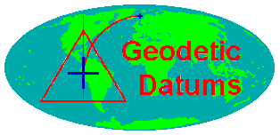
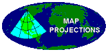
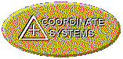
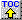

Geodetic Datum Overview
Peter H. Dana
These materials were developed by Peter H. Dana, Department of
Geography, University of Texas at Austin, 1995. These
materials may
be used for study, research, and education in not-for-profit
applications.
If you link to or cite these materials, please credit the
author, Peter
H. Dana, The Geographer's Craft Project, Department of
Geography, The University
of Colorado at Boulder. These materials may not be copied
to or issued
from another Web server without the author's express
permission.
Copyright © 1999-2015 Peter H. Dana. All commercial rights are
reserved.
If you have comments or suggestions, please contact the author
or Kenneth
E. Foote at ken.foote@uconn.edu.
This page is available in a framed
version. For convenience, a Full
Table
of Contents is provided.
Associated Overviews



Introduction to Geodetic Datums
-
Geodetic datums define the size and shape of the earth and the
origin and
orientation of the coordinate systems used to map the earth.
Hundreds of
different datums have been used to frame position descriptions
since the
first estimates of the earth's size were made by Aristotle.
Datums have
evolved from those describing a spherical earth to ellipsoidal
models derived
from years of satellite measurements.
-
Modern geodetic datums range from flat-earth models used for
plane surveying
to complex models used for international applications which
completely
describe the size, shape, orientation, gravity field, and
angular velocity
of the earth. While cartography, surveying, navigation, and
astronomy all
make use of geodetic datums, the science of geodesy is the
central discipline
for the topic.
-
Referencing geodetic coordinates to the wrong datum can result
in position
errors of hundreds of meters. Different nations and agencies use
different
datums as the basis for coordinate systems used to identify
positions in
geographic information systems, precise positioning systems, and
navigation
systems. The diversity of datums in use today and the
technological advancements
that have made possible global positioning measurements with
sub-meter
accuracies requires careful datum selection and careful
conversion between
coordinates in different datums.

Table
of Contents
The Figure of the Earth
-
Geodetic datums and the coordinate reference systems based on
them were
developed to describe geographic positions for surveying,
mapping, and
navigation. Through a long history, the "figure of the earth"
was refined
from flat-earth models to spherical models of sufficient
accuracy to allow
global exploration, navigation and mapping. True geodetic datums
were employed
only after the late 1700s when measurements showed that the
earth was ellipsoidal
in shape.
Table
of Contents
Geometric Earth Models
-
Early ideas of the figure of the earth resulted in descriptions
of the
earth as an oyster (The Babylonians before 3000 B.C.), a
rectangular box,
a circular disk, a cylindrical column, a spherical ball, and a
very round
pear (Columbus in the last years of his life).
-
Flat earth models are still used for plane surveying, over
distances short
enough so that earth curvature is insignificant (less than 10
kms).
-
Spherical earth models represent the shape of the earth with a
sphere of
a specified radius. Spherical earth models are often used for
short range
navigation (VOR-DME) and for global distance approximations.
Spherical
models fail to model the actual shape of the earth. The slight
flattening
of the earth at the poles results in about a twenty kilometer
difference
at the poles between an average spherical radius and the
measured polar
radius of the earth.
-
Ellipsoidal earth models are required for accurate range and
bearing calculations
over long distances. Loran-C, and GPS navigation receivers use
ellipsoidal
earth models to compute position and waypoint information.
Ellipsoidal
models define an ellipsoid with an equatorial radius and a polar
radius.
The best of these models can represent the shape of the earth
over the
smoothed, averaged sea-surface to within about one-hundred
meters.
Table
of Contents
Reference Ellipsoids
-
Reference ellipsoids are usually defined by semi-major
(equatorial radius)
and flattening (the relationship between equatorial and polar
radii).
-
Other reference ellipsoid parameters such as semi-minor axis
(polar radius)
and eccentricity can computed from these terms.
-
Many reference ellipsoids are in use by different nations and
agencies.
Table
of Contents
Earth Surfaces
-
The earth has a highly irregular and constantly changing
surface. Models
of the surface of the earth are used in navigation, surveying,
and mapping.
Topographic and sea-level models attempt to model the physical
variations
of the surface, while gravity models and geoids are used to
represent local
variations in gravity that change the local definition of a
level surface.
-
Earth
Surfaces
-
The topographical surface of the earth is the actual surface
of the land
and sea at some moment in time. Aircraft navigators have a
special interest
in maintaining a positive height vector above this surface.
-
Sea level is the average (methods and temporal spans vary)
surface of the
oceans. Tidal forces and gravity differences from location to
location
cause even this smoothed surface to vary over the globe by
hundreds of
meters.
-
Gravity models attempt to describe in detail the variations in
the gravity
field. The importance of this effort is related to the idea of
leveling.
Plane and geodetic surveying uses the idea of a plane
perpendicular to
the gravity surface of the earth, the direction perpendicular
to a plumb
bob pointing toward the center of mass of the earth. Local
variations in
gravity, caused by variations in the earth's core and surface
materials,
cause this gravity surface to be irregular.
-
Geoid models attempt to represent the surface of the entire
earth over
both land and ocean as though the surface resulted from
gravity alone.
Bomford described this surface as the surface that would exist
if the sea
was admitted under the land portion of the earth by small
frictionless
channels.
-
The WGS-84 Geoid defines geoid heights for the entire earth.
-
The U. S. National Imagery and Mapping Agency (formerly the
Defense Mapping
Agency) publishes a ten by ten degree grid of geoid heights
for the WGS-84
geoid.
-
Table
of Contents
-
Global Coordinate
Systems
-
Coordinate systems to specify locations on the surface of the
earth have
been used for centuries. In western geodesy the equator, the
tropics of
Cancer and Capricorn, and then lines of latitude and longitude
were used
to locate positions on the earth. Eastern cartographers like
Phei Hsiu
used other rectangular grid systems as early as 270 A. D.
-
Various units of length and angular distance have been used
over history.
The meter is related to both linear and angular distance,
having been defined
in the late 18th century as one ten-millionth of the distance
from the
pole to the equator.
-
Table
of Contents
-
Latitude, Longitude,
and Height
-
The most commonly used coordinate system today is the
latitude, longitude,
and height system.
-
The Prime Meridian and the Equator are the reference planes
used to define
latitude and longitude.
-
The geodetic latitude (there are many other defined latitudes)
of a point
is the angle from the equatorial plane to the vertical
direction of a line
normal to the reference ellipsoid.
-
The geodetic longitude of a point is the angle between a
reference plane
and a plane passing through the point, both planes being
perpendicular
to the equatorial plane.
-
The geodetic height at a point is the distance from the
reference ellipsoid
to the point in a direction normal to the ellipsoid.
-
Table
of Contents
-
Earth Centered, Earth
Fixed X, Y,
and Z
-
Earth Centered, Earth Fixed Cartesian coordinates are also
used to define
three dimensional positions.
-
Earth centered, earth-fixed, X, Y, and Z, Cartesian
coordinates (XYZ) define
three dimensional positions with respect to the center of
mass of the reference
ellipsoid.
-
The Z-axis points toward the North Pole.
-
The X-axis is defined by the intersection of the plane
define by the prime
meridian and the equatorial plane.
-
The Y-axis completes a right handed orthogonal system by a
plane 90°
east of the X-axis and its intersection with the equator.
-
ECEF
X, Y, and Z
Table
of Contents
Geodetic Datums
Datum Types
-
Datum types include horizontal, vertical and complete datums.
Table
of Contents
Datums in Use
-
Hundreds of geodetic datums are in use around the world.
-
The Global Positioning system is based on the World Geodetic
System 1984
(WGS-84).
-
Parameters for simple XYZ conversion between many datums and
WGS-84 are
published by the Defense mapping Agency.
Table
of Contents
Datum Shifts
-
Coordinate values resulting from interpreting latitude,
longitude, and
height values based on one datum as though they were based in
another datum
can cause position errors in three dimensions of up to one
kilometer.
Table
of Contents
Datum Conversions
-
Datum conversions are accomplished by various methods.
-
Complete datum conversion is based on seven parameter
transformations that
include three translation parameters, three rotation parameters
and a scale
parameter.
-
Simple three parameter conversion between latitude, longitude,
and height
in different datums can be accomplished by conversion through
Earth-Centered,
Earth Fixed XYZ Cartesian coordinates in one reference datum and
three
origin offsets that approximate differences in rotation,
translation and
scale.
-
The Standard Molodensky formulas can be used to convert
latitude, longitude,
and ellipsoid height in one datum to another datum if the Delta
XYZ constants
for that conversion are available and ECEF XYZ coordinates are
not required.
Table
of Contents
References
Bomford, G. 1980. Geodesy. Oxford: Clarendon
Press.
Burkard, Richard K. 1983. Geodesy for the Layman.
Washington, DC: NOAA.
National Imagery and Mapping Agency. 1997.
Department of Defense World Geodetic System 1984: Its Definition
and Relationships
with Local Geodetic Systems. NIMA TR8350.2 Third Edition 4 July
1997. Bethesda,
MD: National Imagery and Mapping Agency.
National Oceanic and Atmospheric Administration.
1986. Geodetic Glossary. Rockville, MD: National Geodetic
Information Center.
Schwarz, Charles R. 1989. North American Datum
of 1983. Rockville, MD: National Geodetic Survey.
Torge, Wolfgang. 1991 Geodesy, 2nd Edition,
New York: deGruyter.
{kind=link}
{kind=link}
{kind=link}
{kind=link}
{kind=link}
{kind=link}
{kind=link}
{kind=link}
{kind=link}
{kind=link}
{kind=link}
{kind=link}
{kind=link}
{kind=link}
{kind=link}